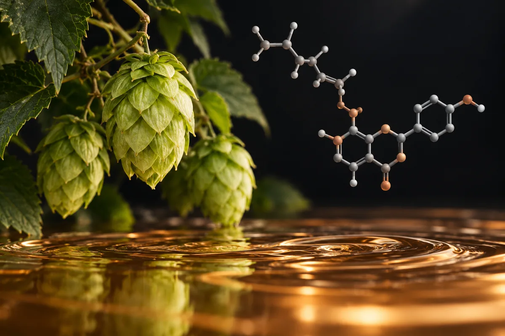

Lúpulo, 8-prenilnaringenina e cerveja sem álcool (fitoestrógeno)
O 8-PN do lúpulo é potente no tubo de ensaio, mas a maioria das cervejas nem tem quantidade detectável; no único ensaio comparado, a testosterona caiu com a cerveja com álcool, não com a sem álcool.

Material experimental. Leia antes de usar qualquer coisa daqui.
Nada nesta página é recomendação médica, prescrição ou plano de tratamento. É uma tradução organizada de protocolos que circulam em comunidades de pesquisa e, quando existe, do que ensaios publicados testaram. As duas coisas estão marcadas de forma diferente — e não são equivalentes.
A maior parte dos compostos aqui não tem aprovação da ANVISA nem da FDA para uso humano. Vários são vendidos com rótulo de "uso exclusivo em pesquisa", o que significa que não passaram por controle de pureza, esterilidade ou dosagem para consumo por pessoas. Dose descrita por comunidade não é dose validada: é o que alguém relatou ter feito.
Converse com um profissional de saúde habilitado antes de considerar qualquer um destes compostos. Se você já usa algum e sentir algo fora do previsto, procure atendimento — não espere o próximo exame de rotina.
Resumo
A 8-prenilnaringenina (8-PN) é um fitoestrógeno do lúpulo, e é dos mais potentes já medidos em laboratório. Na cerveja, a quantidade é de microgramas por litro, e a maioria das cervejas analisadas em 1999 não tinha nível detectável. O único efeito hormonal medido em gente veio de 750 mg de 8-PN puro, numa dose só, em mulheres na pós-menopausa. Não achei estudo de cerveja sem álcool com testosterona em homens. No ensaio que comparou cerveja com e sem álcool, a testosterona caiu 6,8% no período com álcool. A cerveja estimula a prolactina, mas o responsável apontado é a cevada, não o lúpulo.
Por que esta página existe
A cerveja sem álcool aparece descrita em vídeos curtos sobre saúde masculina que vi publicados na internet, como uma "armadilha hormonal". O roteiro: quem trocou a cerveja comum pela sem álcool "trocou o veneno lento pelo veneno que a indústria prefere", porque "o problema nunca foi o álcool, foi o lúpulo"; a cerveja sem álcool "mantém o lúpulo intacto"; o lúpulo traz a 8-prenilnaringenina, "o fitoestrógeno mais potente já identificado em qualquer planta", segundo "estudos da Universidade de Utrecht"; ela "ocupa os receptores de estrogênio" com "resposta hormonal mensurável", e basta "exposição frequente", sem dose alta; o lúpulo também "eleva a prolactina", que "suprime o LH" e, com ele, a testosterona; o efeito aparece "no acúmulo de meses", quando "o treino para de responder". A versão sem álcool teria sido lançada como "reposicionamento estratégico" quando os homens começaram a fugir dos fitoestrógenos. A saída proposta é "o que fazer no lugar e como limpar isso do sistema", que não é descrita.
Esta página trata de algo que se bebe e que o vídeo manda evitar, não de um suplemento. Como nas páginas sobre plásticos e radiofrequência (ver as páginas bpa-ftalatos-plasticos e radiofrequencia-celular-notebook), a tabela de doses deu lugar às exposições usadas nos estudos. O efeito do álcool sobre a testosterona tem página própria, que esta não repete (ver a página ultraprocessados-acucar-alcool).
Levantei as alegações de 1 vídeo curto e conferi 11 delas. Nenhum número desta página veio da fonte secundária do site.
O que é o lúpulo, e o que é a 8-PN
- Lúpulo é ingrediente obrigatório da cerveja no Brasil, com ou sem álcool. Pela norma brasileira de cerveja, o lúpulo são os cones da flor de Humulus lupulus, e a cerveja é a bebida de mosto de cevada maltada cozido com lúpulo ou extrato de lúpulo. A "cerveja sem álcool" é a que tem até 0,5% de álcool em volume (Instrução Normativa 65/2019 do Ministério da Agricultura).
- A 8-PN foi identificada em 1999, em Londres e Gent. Milligan e colegas, do King's College de Londres com químicos da Universidade de Gent, na Bélgica, separaram os compostos do lúpulo em testes de laboratório para estrogênio e acharam a 8-prenilnaringenina, com atividade "maior que a de outros estrógenos vegetais estabelecidos". No mesmo artigo, escreveram que ela também aparece na cerveja, mas em níveis baixos, que "não devem causar preocupação" (Milligan 1999).
- Ela se liga aos dois receptores de estrogênio, e não tem ação androgênica. No ano seguinte, o mesmo grupo mostrou que a 8-PN compete fortemente com o estradiol pelos receptores alfa e beta, e que nenhum composto do lúpulo testado teve atividade androgênica ou progestagênica. A preocupação dos autores era com o uso livre de lúpulo em preparados de ervas para mulheres, vendidos para "aumentar os seios" (Milligan 2000).
- O intestino pode fabricar mais 8-PN a partir de outro composto do lúpulo. A cerveja pode ter até 4 mg/L de isoxantoumol, que bactérias do cólon convertem em 8-PN. Em amostras de fezes de 51 mulheres, 8 foram altas produtoras. Os autores calculam que essa conversão pode multiplicar por 10 a exposição de quem bebe cerveja com moderação, e chegar perto da faixa de atividade biológica (Possemiers 2006).
- Potente no laboratório não quer dizer efeito na dose da dieta. A revisão de Pohjanvirta e Nasri (2022) resume: a 8-PN é um dos fitoestrógenos mais potentes já medidos in vitro, mas a maioria dos seus efeitos exige concentrações que a dieta normal não alcança, só a dose farmacológica.
Quanto de 8-PN tem na cerveja, medido
- Na maioria das cervejas, nada detectável. Num método com limite de detecção de cerca de 5 microgramas por litro, a maior parte das cervejas analisadas não tinha 8-PN detectável; a mais alta tinha 19,8 microgramas por litro. A quantidade depende da variedade de lúpulo, da quantidade usada e do tipo de produto de lúpulo (Tekel 1999).
- Em 15 cervejas de supermercado, de menos de 0,8 a 38,6 microgramas por litro (Maragou 2008).
- Para comparação, a dose que mexeu em hormônio foi 750 mg. Em mulheres na pós-menopausa, uma dose única de 750 mg de 8-PN pura, ou 750 mil microgramas, baixou o LH em 16,7% (IC 0,5–30,2). As doses de 50 e 250 mg não aparecem no resumo com efeito hormonal (Rad 2006).
- Não achei medida de 8-PN em cerveja sem álcool. Os estudos que localizei mediram cervejas comuns, e não localizei dado sobre quanto de 8-PN tem a cerveja sem álcool.
A prolactina vem da cevada, não do lúpulo
- A cerveja estimula a prolactina, mais em mulheres. Num estudo de 1985, beber cerveja liberou prolactina, com efeito maior em mulheres do que em homens; o salsolinol, um componente menor da cerveja, não foi o responsável (Carlson 1985). O resumo não informa o tamanho nem a duração do aumento.
- O extrato de lúpulo não liberou prolactina. Em ovelhas, injeções de cerveja liofilizada, de extrato de cevada e de malte liberaram prolactina; o extrato de lúpulo foi inativo. O composto ativo estava na cevada e no malte e era, essencialmente, polissacarídeo (Sawagado e Houdebine 1988).
- É por isso que a cerveja sem álcool também mexe com a prolactina. A revisão de Koletzko e Lehner (2000), sobre cerveja e amamentação, conclui que o componente que estimula a prolactina não é o álcool, mas aparentemente um polissacarídeo da cevada, o que explica o efeito também com cerveja sem álcool.
- Prolactina alta de verdade é causa de hipogonadismo. A hiperprolactinemia, que tem como causas mais comuns remédios, sobretudo antipsicóticos, e tumores da hipófise, é causa de hipogonadismo em homens (Haidenberg-David 2024). Não localizei estudo mostrando que beber cerveja, com ou sem álcool, leva a hiperprolactinemia ou a queda de LH em homens.
O que se mediu em homens que bebem cerveja
- Testosterona menor com a cerveja com álcool, em comparação com a sem álcool. Num ensaio randomizado e cruzado, com dieta controlada, 10 homens de meia-idade beberam cerveja com 40 g de álcool por dia ou cerveja sem álcool, no jantar, por 3 semanas cada. No período com álcool, a testosterona caiu 6,8% (IC −1,0 a −12,5) e o estradiol não mudou (Sierksma 2004). Se o lúpulo fosse o problema, as duas fases teriam o lúpulo; a diferença foi o álcool.
- O álcool crônico baixa a testosterona em meta-análise. A meta-análise de ensaios controlados de Santi e colegas (2024), discutida na página sobre dieta e álcool, achou testosterona total mais baixa e estradiol mais alto com o consumo crônico.
- Depois de uma bebedeira, estradiol mais alto, com cerveja ou com vinho. Em 72 homens que beberam cerveja ou vinho em quantidade de 0,9 a 2,1 g de álcool por quilo, o estradiol subiu nas horas seguintes, e a testosterona subiu ou caiu conforme o tempo e a dose; o autor discute se componentes estrogênicos das bebidas explicariam o aumento (Couwenbergs 1988). O efeito apareceu nas duas bebidas, não só na que tem lúpulo.
- No maior estudo transversal, beber pouco a moderadamente não piorou o sêmen. Em 8.344 homens saudáveis da Europa e dos EUA, não houve associação consistente entre álcool e sêmen, nem no total nem por tipo de bebida, cerveja incluída; quem bebia mais de 20 doses por semana tinha testosterona livre mais alta (Jensen 2014). É transversal: não mostra causa.
- O único ensaio com cerveja sem álcool em homens jovens não mediu hormônio. Em 44 homens jovens, 660 mL por dia de cerveja sem álcool por 4 semanas mexeram em glicose e triglicerídeos conforme o tipo de cerveja; os autores atribuem isso às calorias e ao açúcar, e o resumo não traz testosterona (Kreimeyer 2025).
Quanta evidência existe, de verdade
Os números abaixo foram levantados por mim em 16 de outubro de 2026, no PubMed e no ClinicalTrials.gov. A consulta de cada linha está ao lado do número, para qualquer pessoa repetir e me contradizer.
| Base | Consulta | Resultado |
|---|---|---|
| PubMed | 8-prenylnaringenin | 263 artigos |
| PubMed | (hops OR Humulus lupulus) AND (estrogenic OR phytoestrogen OR phytoestrogens) | 201 artigos |
| PubMed | (8-prenylnaringenin OR hop extract OR Humulus lupulus) AND (Randomized Controlled Trial[Publication Type]) | 60 artigos |
| PubMed | (8-prenylnaringenin OR hops OR Humulus lupulus) AND (testosterone) AND (humans[MeSH Terms]) | 5 artigos |
| PubMed | (non-alcoholic beer OR alcohol-free beer OR dealcoholized beer) | 446 artigos |
| PubMed | (non-alcoholic beer OR alcohol-free beer OR dealcoholized beer) AND (testosterone OR estradiol OR prolactin OR luteinizing hormone) | 3 artigos |
| PubMed | (beer) AND (prolactin) | 54 artigos |
| PubMed | (beer) AND (testosterone) AND (humans[MeSH Terms]) | 52 artigos |
| ClinicalTrials.gov | intervenção: 8-prenylnaringenin | 2 estudos registrados |
| ClinicalTrials.gov | intervenção: hop extract | 6 estudos registrados |
| ClinicalTrials.gov | intervenção: non-alcoholic beer | 21 estudos registrados |
| ClinicalTrials.gov | intervenção: (hop extract OR 8-prenylnaringenin OR Humulus lupulus) AND AREA[Phase]PHASE3 | 0 ensaios de fase 3 |
Leitura honesta desses números
- Nenhum dos 5 artigos de lúpulo e testosterona em humanos testa lúpulo em homens. Um é revisão de biologia celular, um é estudo em camundongos, um é de metabolismo in vitro de valeriana e lúpulo, um é de comportamento em ratos e um compara receptores de estrogênio em levedura. A busca casou por palavras.
- Dos 3 artigos de cerveja sem álcool e hormônio, só um é sobre o tema. É a revisão sobre cerveja e amamentação. Os outros dois tratam de manipulação de urina no antidoping e de privação de sono com álcool.
- Os ensaios randomizados de extrato de lúpulo padronizado em 8-PN que abri são em mulheres na menopausa. Não li os 60 um a um; entre os que abri, não há ensaio de extrato de lúpulo ou de 8-PN com desfecho hormonal em homens.
- Os 2 registros com 8-PN são de farmacocinética. Um é o estudo alemão de absorção em 16 adultos; o outro, de metabolismo de suplemento de lúpulo em 22 mulheres. Entre os 21 registros de cerveja sem álcool, há um de uma empresa de alimentos sobre ingredientes do malte e prolactina, em 12 mulheres, concluído em 2021, sem resultado no registro. Registro não é resultado.
- Contagem de artigo mede atenção acadêmica, não evidência de desfecho.
Os estudos que sustentam (ou não) as alegações
Segundo o PubMed, estes são os trabalhos concretos por trás do que se diz sobre lúpulo, cerveja e hormônios. Leia o que cada um mediu, e em quantas pessoas.
| Estudo | N | Contexto | O que relatou | Ressalva |
|---|---|---|---|---|
| Milligan et al., 1999 J Clin Endocrinol Metab 84(6):2249-52 · PMID 10372741 | — | Fracionamento do lúpulo guiado por ensaios de estrogênio in vitro | 8-PN identificada, com atividade maior que outros estrógenos vegetais; na cerveja, níveis baixos, "sem motivo de preocupação" | Laboratório; King's College de Londres e Universidade de Gent |
| Milligan et al., 2000 J Clin Endocrinol Metab 85(12):4912-5 · PMID 11134162 | — | Comparação de flavonoides do lúpulo in vitro | Só a 8-PN compete fortemente com o estradiol nos receptores alfa e beta; nenhum composto com ação androgênica | Laboratório |
| Rad et al., 2006 Br J Clin Pharmacol 62(3):288-96 · PMID 16934044 | 24 mulheres (18 com 8-PN) | Pós-menopausa; dose única de 50, 250 ou 750 mg, contra placebo | 750 mg: LH −16,7% (IC 0,5–30,2); bem tolerada | Dose única; mulheres; dose farmacológica |
| Calvo-Castro et al., 2018 Mol Nutr Food Res 62(7):e1700838 · PMID 29363261 | 16 (8 homens) | Dose única de 500 mg de 8-PN, 6-PN ou placebo, cruzado | 8-PN muito mais absorvida que o isômero; o resumo não relata hormônios | Farmacocinética, não desfecho |
| Possemiers et al., 2006 J Nutr 136(7):1862-7 · PMID 16772450 | 51 amostras de fezes; 3 mulheres | Conversão de isoxantoumol em 8-PN pelo intestino | 8 de 51 altas produtoras; exposição pode aumentar 10 vezes | Modelo e 3 voluntárias |
| Tekel et al., 1999 J Agric Food Chem 47(12):5059-63 · PMID 10606572 | — | Método de dosagem de 8-PN em cerveja | Maioria sem 8-PN detectável; máximo de 19,8 µg/L | Cervejas da época; marcas não informadas no resumo |
| Maragou et al., 2008 J Chromatogr A 1202(1):47-57 · PMID 18621378 | 15 cervejas | Supermercado | 8-PN de menos de 0,8 a 38,6 ng/mL | Amostra pequena |
| Sierksma et al., 2004 Alcohol Clin Exp Res 28(5):780-5 · PMID 15166654 | 10 homens e 9 mulheres | Cruzado: cerveja com álcool (40 g/dia nos homens) contra cerveja sem álcool, 3 semanas cada | Homens: testosterona −6,8% (IC −1,0 a −12,5) com álcool; estradiol sem mudança | Muito pequeno; curto |
| Couwenbergs, 1988 J Steroid Biochem 31(4A):467-73 · PMID 3172777 | 72 homens | Cerveja ou vinho, 0,9 a 2,1 g de álcool/kg | Estradiol maior nas horas seguintes; testosterona subiu ou caiu conforme tempo e dose | Efeito agudo; aparece com vinho também |
| Jensen et al., 2014 Hum Reprod 29(8):1801-9 · PMID 24893607 | 8.344 homens | Transversal, Europa e EUA | Sem associação consistente entre álcool (inclusive cerveja) e sêmen; >20 doses/semana: testosterona livre mais alta | Transversal; participação de 20–30% |
| Carlson et al., 1985 J Clin Endocrinol Metab 60(4):673-7 · PMID 3972968 | não informado no resumo | Cerveja e prolactina, em humanos e ratos | A cerveja liberou prolactina, mais em mulheres; salsolinol não é o responsável | Tamanho do aumento não está no resumo |
| Sawagado e Houdebine, 1988 Ann Biol Clin (Paris) 46(2):129-34 · PMID 3382062 | ratas e ovelhas | Cerveja, cevada, malte e lúpulo | Cevada e malte liberaram prolactina; lúpulo inativo; ativo é polissacarídeo | Animal |
| Kreimeyer et al., 2025 Nutrients 17(10):1625 · PMID 40431365 | 44 homens jovens | 660 mL/dia de cerveja sem álcool ou água, 4 semanas, randomizado | Efeitos em glicose e gordura do sangue conforme o tipo; atribuídos a calorias e açúcar | Não mediu hormônio sexual no resumo |
| Heyerick et al., 2006 Maturitas 54(2):164-75 · PMID 16321485 | 67 mulheres | Menopausa; extrato de lúpulo com 100 ou 250 µg de 8-PN/dia, 12 semanas | 100 µg melhor que placebo na 6ª semana, não na 12ª; sem relação dose-resposta | Da Universidade de Gent, com um autor do artigo que identificou a 8-PN |
Exposições usadas nos estudos
Isto não é recomendação: é o registro de que exposição foi estudada, em quem e por quanto tempo. Nenhum estudo localizado deu lúpulo ou 8-PN a homens e mediu testosterona.
| Estudo | Exposição | Duração | Em quem | O que o estudo queria medir |
|---|---|---|---|---|
| Rad et al., 2006 | 8-PN pura, 50, 250 ou 750 mg por boca | Dose única | 24 mulheres na pós-menopausa | Farmacocinética, LH e FSH |
| Calvo-Castro et al., 2018 | 8-PN ou 6-PN pura, 500 mg por boca | Dose única | 16 adultos, 8 homens | Absorção e segurança |
| Heyerick et al., 2006 | Extrato de lúpulo com 100 ou 250 µg de 8-PN por dia | 12 semanas | 67 mulheres na menopausa | Sintomas da menopausa |
| Erkkola et al., 2010 | Extrato de lúpulo com 100 µg de 8-PN por dia | 8 semanas por fase, cruzado | 36 mulheres na menopausa | Sintomas da menopausa |
| Possemiers et al., 2006 | 5,59 mg de isoxantoumol por dia | 4 dias | 3 mulheres | Conversão em 8-PN no intestino |
| Sierksma et al., 2004 | Cerveja com 40 g de álcool por dia, contra cerveja sem álcool | 3 semanas por fase | 10 homens de meia-idade | Hormônios sexuais |
| Kreimeyer et al., 2025 | 660 mL por dia de cerveja sem álcool | 4 semanas | 44 homens jovens | Glicose, gordura e fígado |
Das 11 alegações conferidas, só 1 se confirma, e ela não é sobre o lúpulo
Cada linha é uma alegação como ela circula, sem o nome de quem a fez. O veredito usa os rótulos confirmado, parcialmente, não sustentado, sem estudo em humanos, estudo em animal ou in vitro e número não encontrado na fonte citada.
| O que se diz | O que os estudos mostram | Veredito |
|---|---|---|
| Quem trocou a cerveja comum pela sem álcool "fez exatamente o oposto" de cuidar do hormônio | No ensaio que comparou as duas, a testosterona caiu no período com álcool, não no sem álcool (Sierksma 2004); não localizei estudo de cerveja sem álcool com testosterona em homens | Não sustentado |
| "O problema nunca foi o álcool, foi o lúpulo" | O álcool crônico baixa a testosterona em meta-análise (Santi 2024); com o mesmo lúpulo nas duas fases, só a fase com álcool baixou a testosterona (Sierksma 2004) | Não sustentado |
| A cerveja sem álcool "mantém o lúpulo intacto" | Lúpulo é ingrediente de toda cerveja no Brasil, com ou sem álcool (IN 65/2019); mas a 8-PN não é detectável na maioria das cervejas (Tekel 1999), e não localizei medida em cerveja sem álcool | Parcialmente |
| A 8-PN é "o fitoestrógeno mais potente já identificado em qualquer planta" | Atividade maior que a de outros estrógenos vegetais, medida em ensaio de laboratório (Milligan 1999); "um dos mais potentes in vitro" (Pohjanvirta 2022) | Estudo em animal ou in vitro |
| Isso está "nos estudos da Universidade de Utrecht" | A identificação é do King's College de Londres com a Universidade de Gent (Milligan 1999); de Utrecht, localizei um estudo de 8-PN em óvulos de porca no laboratório (Solak 2014) | Parcialmente |
| Ela ocupa os receptores de estrogênio "com eficiência suficiente para gerar resposta hormonal mensurável" | Liga-se aos receptores alfa e beta (Milligan 2000); em gente, o efeito medido foi LH −16,7% com 750 mg numa dose só, em mulheres (Rad 2006); a cerveja tem microgramas por litro | Parcialmente |
| "Não precisa de dose alta, precisa de exposição frequente" | Não localizei estudo de exposição repetida a cerveja ou lúpulo com desfecho hormonal em homens; a revisão de 2022 diz que a maioria dos efeitos exige concentrações que a dieta não alcança (Pohjanvirta 2022) | Não sustentado |
| A indústria lançou a versão sem álcool como "reposicionamento" quando homens fugiram dos fitoestrógenos | Nenhuma fonte citada e nenhuma localizada | Não sustentado |
| O lúpulo eleva a prolactina | O extrato de lúpulo foi inativo; o que liberou prolactina foi cevada e malte (Sawagado 1988); a revisão aponta um polissacarídeo da cevada (Koletzko 2000) | Não sustentado |
| Prolactina elevada suprime o LH e a testosterona | A hiperprolactinemia é causa de hipogonadismo em homens (Haidenberg-David 2024); não localizei estudo mostrando que a cerveja cause hiperprolactinemia | Confirmado (o mecanismo, não a ligação com a cerveja) |
| O efeito aparece "no acúmulo de meses", quando "o treino para de responder" | Nenhum estudo localizado mediu cerveja, lúpulo ou 8-PN contra resposta ao treino | Não sustentado |
Placar: 1 confirmada, 3 parcialmente, 6 não sustentadas e 1 com estudo só em laboratório.
Quem tem mais motivo para prestar atenção
- Quem bebe cerveja com álcool todos os dias. O efeito medido sobre a testosterona é do álcool (Sierksma 2004; Santi 2024). Trocar pela sem álcool remove justamente esse componente.
- Quem não pode ingerir nenhum álcool. No Brasil, a cerveja sem álcool pode ter até 0,5% em volume; acima de 0,05%, o rótulo tem de avisar "Contém álcool em até 0,5% v/v" ou declarar o teor; "zero álcool" só vale até 0,05% (IN 65/2019).
- Quem usa extrato de lúpulo concentrado, e não cerveja. Os estudos com extrato padronizado são em mulheres, e o grupo que identificou a 8-PN pediu cautela com o uso livre em preparados de ervas para mulheres (Milligan 2000). Em células de óvulo de porca, a 8-PN prejudicou a maturação em concentrações que, segundo os autores, aparecem no plasma de quem toma suplemento (Solak 2014).
- Homens com testosterona baixa, ginecomastia ou prolactina alta no exame. Não achei estudo que ligue isso à cerveja sem álcool. A prolactina alta tem causas comuns, como remédios e tumor da hipófise, que pedem investigação (Haidenberg-David 2024).
Status regulatório
- Brasil, cerveja: a Instrução Normativa 65/2019 do Ministério da Agricultura define "cerveja sem álcool" ou "desalcoolizada" como a que tem até 0,5% de álcool em volume; "com teor alcoólico reduzido", de mais de 0,5% até 2,0%; e "cerveja", acima de 2,0%. "Zero álcool" ou "0,0%" no rótulo só até 0,05% de álcool residual. NÃO VERIFIQUEI alterações posteriores à publicação de 2019.
- Brasil, suplemento: lúpulo, Humulus lupulus e 8-prenilnaringenina não aparecem na lista de constituintes autorizados para suplemento alimentar (IN 28/2018, Anexo I, texto consolidado com alterações até a IN 470, de 16 de setembro de 2026).
- Brasil, medicamento: no dado aberto da ANVISA, há 1 registro ativo de fitoterápico que associa valeriana e lúpulo (busca por "humulus" e "lupulo" no princípio ativo e no nome, sem acento e sem diferença de caixa).
- União Europeia: a agência europeia de medicamentos tem monografia do cone de lúpulo como medicamento tradicional para "alívio de sintomas leves de estresse mental e para ajudar o sono", para adultos e maiores de 12 anos, com base em uso tradicional e não em ensaio clínico. NÃO VERIFIQUEI a situação de extratos de lúpulo padronizados em 8-PN como suplemento na Europa.
- Estados Unidos: NÃO VERIFIQUEI.
- WADA: não se aplica.
O que este levantamento não fez
- Li resumos, não os artigos inteiros. Os números são os dos resumos do PubMed.
- Não localizei medida de 8-PN em cerveja sem álcool, nem estudo que tenha dado cerveja sem álcool a homens e medido testosterona, estradiol ou prolactina.
- Não li a carta de 1981 na Lancet sobre prolactina e cerveja, que não tem resumo, nem verifiquei o tamanho e a duração do aumento de prolactina após a cerveja.
- Não procurei os "estudos da Universidade de Utrecht" fora do PubMed.
- Não verifiquei a situação regulatória do lúpulo nos Estados Unidos, nem a de extratos padronizados na Europa, nem alterações da IN 65/2019.
- Não avaliei o efeito do álcool sobre a testosterona em detalhe; ele está na página sobre dieta e álcool (ver a página ultraprocessados-acucar-alcool).
- Não avaliei o "o que fazer no lugar e como limpar isso do sistema" dos vídeos: não é descrito.
Referências
- Milligan SR, Kalita JC, Heyerick A, et al. Identification of a potent phytoestrogen in hops (Humulus lupulus L.) and beer. J Clin Endocrinol Metab. 1999;84(6):2249-52. PMID 10372741 — a identificação da 8-PN; níveis na cerveja "sem motivo de preocupação".
- Milligan SR, Kalita JC, Pocock V, et al. The endocrine activities of 8-prenylnaringenin and related hop (Humulus lupulus L.) flavonoids. J Clin Endocrinol Metab. 2000;85(12):4912-5. PMID 11134162 — liga-se aos receptores alfa e beta; nenhuma ação androgênica.
- Pohjanvirta R, Nasri A. The Potent Phytoestrogen 8-Prenylnaringenin: A Friend or a Foe? Int J Mol Sci. 2022;23(6):3168. PMID 35328588 — potente in vitro; efeitos exigem concentrações fora do alcance da dieta.
- Possemiers S, Bolca S, Grootaert C, et al. The prenylflavonoid isoxanthohumol from hops (Humulus lupulus L.) is activated into the potent phytoestrogen 8-prenylnaringenin in vitro and in the human intestine. J Nutr. 2006;136(7):1862-7. PMID 16772450 — conversão intestinal em 8-PN.
- Tekel' J, De Keukeleire D, Rong H, et al. Determination of the hop-derived phytoestrogen, 8-prenylnaringenin, in beer by gas chromatography/mass spectrometry. J Agric Food Chem. 1999;47(12):5059-63. PMID 10606572 — maioria das cervejas sem 8-PN detectável; máximo de 19,8 µg/L.
- Maragou NC, Rosenberg E, Thomaidis NS, Koupparis MA. Direct determination of the estrogenic compounds 8-prenylnaringenin, zearalenone, alpha- and beta-zearalenol in beer by liquid chromatography-mass spectrometry. J Chromatogr A. 2008;1202(1):47-57. PMID 18621378 — 15 cervejas, de menos de 0,8 a 38,6 ng/mL.
- Rad M, Hümpel M, Schaefer O, et al. Pharmacokinetics and systemic endocrine effects of the phyto-oestrogen 8-prenylnaringenin after single oral doses to postmenopausal women. Br J Clin Pharmacol. 2006;62(3):288-96. PMID 16934044 — 750 mg baixaram o LH em 16,7%.
- Calvo-Castro LA, Burkard M, Sus N, et al. The Oral Bioavailability of 8-Prenylnaringenin from Hops (Humulus Lupulus L.) in Healthy Women and Men is Significantly Higher than that of its Positional Isomer 6-Prenylnaringenin in a Randomized Crossover Trial. Mol Nutr Food Res. 2018;62(7):e1700838. PMID 29363261 — 500 mg em 16 adultos, absorção.
- Heyerick A, Vervarcke S, Depypere H, et al. A first prospective, randomized, double-blind, placebo-controlled study on the use of a standardized hop extract to alleviate menopausal discomforts. Maturitas. 2006;54(2):164-75. PMID 16321485 — 100 ou 250 µg de 8-PN por dia em mulheres.
- Erkkola R, Vervarcke S, Vansteelandt S, et al. A randomized, double-blind, placebo-controlled, cross-over pilot study on the use of a standardized hop extract to alleviate menopausal discomforts. Phytomedicine. 2010;17(6):389-96. PMID 20167461 — 100 µg de 8-PN por dia, 36 mulheres.
- Solak KA, Santos RR, van den Berg M, et al. Naringenin (NAR) and 8-prenylnaringenin (8-PN) reduce the developmental competence of porcine oocytes in vitro. Reprod Toxicol. 2014;49:1-11. PMID 24905140 — o estudo de Utrecht localizado: óvulos de porca in vitro.
- Sierksma A, Sarkola T, Eriksson CJ, et al. Effect of moderate alcohol consumption on plasma dehydroepiandrosterone sulfate, testosterone, and estradiol levels in middle-aged men and postmenopausal women: a diet-controlled intervention study. Alcohol Clin Exp Res. 2004;28(5):780-5. PMID 15166654 — cerveja com álcool contra sem álcool: testosterona −6,8%.
- Santi D, Cignarelli A, Baldi M, et al. The chronic alcohol consumption influences the gonadal axis in men: Results from a meta-analysis. Andrology. 2024;12(4):768-780. PMID 37705506 — álcool crônico baixa a testosterona.
- Couwenbergs CJ. Acute effects of drinking beer or wine on the steroid hormones of healthy men. J Steroid Biochem. 1988;31(4A):467-73. PMID 3172777 — estradiol maior após cerveja ou vinho.
- Jensen TK, Swan S, Jørgensen N, et al. Alcohol and male reproductive health: a cross-sectional study of 8344 healthy men from Europe and the USA. Hum Reprod. 2014;29(8):1801-9. PMID 24893607 — sem associação entre álcool, inclusive cerveja, e sêmen.
- Kreimeyer H, Sydor S, Buchholz L, et al. Non-Alcoholic Beer Influences Glucose and Lipid Metabolism and Changes Body Composition in Healthy, Young, Male Adults. Nutrients. 2025;17(10):1625. PMID 40431365 — o único ensaio com cerveja sem álcool em homens jovens; sem hormônio no resumo.
- Carlson HE, Wasser HL, Reidelberger RD. Beer-induced prolactin secretion: a clinical and laboratory study of the role of salsolinol. J Clin Endocrinol Metab. 1985;60(4):673-7. PMID 3972968 — cerveja libera prolactina, mais em mulheres.
- Sawagado L, Houdebine LM. Identification of the lactogenic compound present in beer. Ann Biol Clin (Paris). 1988;46(2):129-34. PMID 3382062 — o lúpulo não liberou prolactina; a cevada sim.
- Koletzko B, Lehner F. Beer and breastfeeding. Adv Exp Med Biol. 2000;478:23-8. PMID 11065057 — polissacarídeo da cevada, efeito também com cerveja sem álcool.
- Haidenberg-David F, Sidauy-Adissi J, Moscona-Nissan A, et al. Overview of Hyperprolactinemia: General Approach and Reproductive Health Implications. Arch Med Res. 2024;55(8):103102. PMID 39454469 — hiperprolactinemia como causa de hipogonadismo em homens.
- Instrução Normativa nº 65, de 10 de dezembro de 2019, do Ministério da Agricultura, no Diário Oficial da União — definição de lúpulo, de cerveja sem álcool (até 0,5%) e regra do "zero álcool" (até 0,05%).
- Instrução Normativa nº 28, de 26 de julho de 2018, da ANVISA, texto consolidado no AnvisaLegis — lista de constituintes autorizados em suplemento, sem lúpulo.
- Dado aberto de medicamentos registrados da ANVISA — a mesma base usada na página O que existe no Brasil.
- Agência Europeia de Medicamentos, página do medicamento fitoterápico Lupuli flos — uso tradicional para estresse leve e sono.
- Registros consultados no ClinicalTrials.gov: NCT03140397 e NCT02848430 (8-PN e lúpulo, farmacocinética), NCT04796259 (malte e prolactina, 12 mulheres).
- E-utilities do PubMed (esearch) — a base de todas as contagens de artigo desta página.
- API pública do ClinicalTrials.gov, versão 2 — a base de todas as contagens de estudo e de fase 3 desta página.